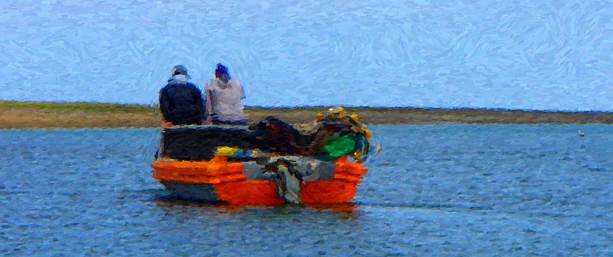

Study system

San Antonio Bay is a hypersaline, macrotidal coastal bay on the San Matías Gulf (Río Negro, Argentina). Tides empty and refill its channels twice a day, temperature swings strongly between seasons, and an artisanal fishery has worked its waters for decades.
That variability makes it a natural laboratory to ask how coastal communities are assembled, how stable they are, and how people and ecosystems are linked.
Functional diversity Community assembly Food webs Fisheries Oceanographic fronts
Research lines

Persistent functional structure in a variable bay
Species come and go with the seasons, yet the functional structure of the fish assemblage persists. Using null models, β-diversity and functional trajectories, we show it emerges from hierarchical environmental filtering and ontogenetic turnover.

Who eats whom: trophic ecology of coastal fishes
Diet analyses of the dominant coastal fishes, grouped into predator guilds and prey functional groups, reveal how the food web is organised and how opportunistic predators respond to new prey such as the invasive green crab.

The fish assemblage and the artisanal fishery through time
Comparing current surveys with historical records to understand how the coastal fish assemblage and the catch of San Antonio Bay's artisanal fishers have changed, and how fishers perceive those changes.

A hypersaline bay–gulf front
Hydrography and chlorophyll-a patterns across the San Antonio Bay – San Matías Gulf frontal system. My role: data curation, analysis workflow and a reproducible repository.

A glimpse of food webs from space
Linking satellite-derived phytoplankton functional types (NASA PACE) with fish functional traits from NOAA bottom trawl surveys on the Northeast US Shelf, using RLQ analysis.
Other lines and collaborations
Plankton under marine heatwaves
How warming, recurrent heatwaves and nutrient regimes shape coastal plankton production and respiration.
Parasites of the Patagonian blennie
Acanthocephalan fauna of Eleginops maclovinus and how it varies with season and host size.
Pacific oyster in northern Patagonia
Distribution, abundance and size structure of the invasive Magallana gigas along 180 km of coast.
Research networks
Fish Diversity Indicators Network of Argentina; Coastal Oceanographic Observatories (Río Negro node); Patagonian coastal ecology working group.